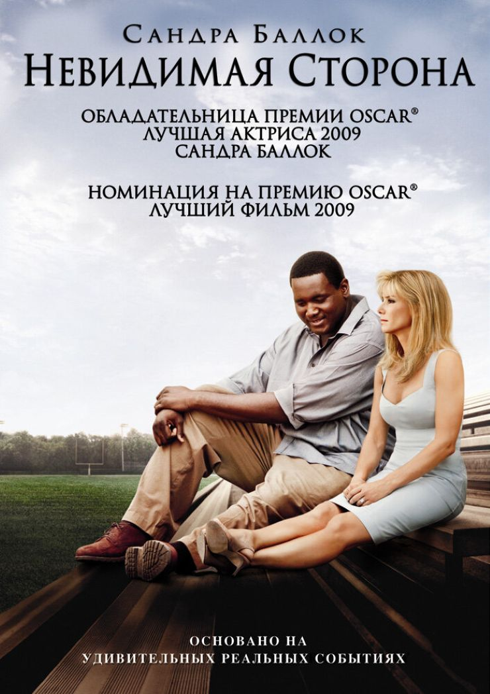

Подборка мотивирующих документальных фильмов про спорт
Друзья! В этой статье подборка документальных фильмов о беге, которые меня вдохновляют перед стартом:

"Последний танец" (2020)
Последний танец.
Рейтинг на кинопоиске - 9.0

"Сенна" (2010)
Сенна.
Рейтинг на кинопоиске - 8.4

"Меня зовут Мохаммед Али" (2019)
Меня зовут Мохаммед Али.
Рейтинг на кинопоиске - 8.3

"Больше чем игра" (2008)
Больше чем игра.
Рейтинг на кинопоиске - 8.0